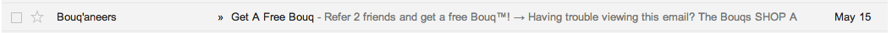
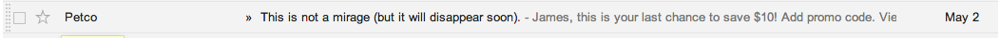
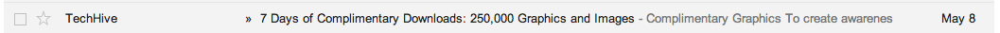
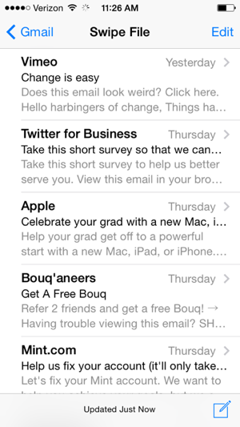
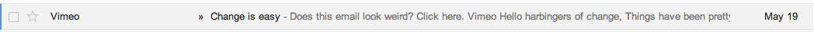
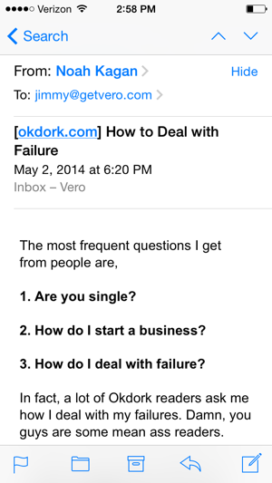

“Permission marketing is the privilege (not the right) of delivering anticipated, personal and relevant messages to people who actually want to get them.” – Seth Godin
Email is an intimate form of communication. With great power — the privilege of inbox access — comes great responsibility — the requirement to respect recipients’ permission by keeping emails valuable, actionable and useful.
The best way to do this is to follow a strict checklist before sending any email. Here are nine questions to ask yourself before you hit send.
1. Did I write a killer subject line?
Your readers get a lot of email, so you need great subject lines to grab their attention. On top of that, you need subject lines that increase value without implying cost. In other words, you need to let readers know that the content of your email is incredibly useful and won’t cost them a cent.
A subject line is your first call to action (CTA), so it must be free of friction words. As Joanna Wiebe of Copyhackers explained at Authority Intensive, calls to action are like unopened doors: The reason that people don’t click is because they are afraid of what’s on the other side.
Depending on the type of email you are sending, you want the subject line to make the value of clicking abundantly clear. Here are a few examples from the Crazy Egg blog:
- Where to drink beer right now
- How I grew the KissMetrics Blog From 0 to 350,000 readers a month
- Let’s get fat, Boston
And here are a few great ones that ended up in my inbox recently:
- Let’s get this party started: Activate your Moz account. [From Moz, obviously.]
- This is not a mirage (but it will disappear soon). [Petco]
- We got this one wrong. We’ve adjusted all paid plans: Now add up to 15 blog feeds. [Buffer]
Some studies indicate that subject lines should be short. And it’s true that subject lines with between four and 15 characters do extremely well. But it’s also true that the best emails are really creative and speak directly to the reader. If that means you need a longer subject line, then go for it.
My weekly Quora update has some of my favorite subject lines. All of them are long, and all of them pique my interest.
Need subject line ideas? Take a page out of @Quora‘s book pic.twitter.com/FQXlWNUntv
— Jimmy Daly (@jimmy_daly) May 13, 2014
Marketers should do their own testing to see what works for their audiences. Subject lines are crucial, so be sure you nail them.
2. Who is this email really from?
Every email provider allows its users to dictate who emails come from, but who is your email really from? Not only do you need to consider the person sending the email, but you also need to understand exactly what your users will see before they open your message. This includes the “from” address and subject line, but it can also include the first text in the email, or even image alt text. If it could possibly show up in a user’s inbox, it needs to be optimized. Here’s a look at what I mean:    
To ensure that any available space is used to enticing copy, make sure that your entire email is ready for readers.
- Any and all images should contain alt text. Say, for example, you include an image of a cup of coffee. If it were a blog post, you might use some of your target keywords as alt text, but in an email, where SEO is irrelevant, you want to use copy that excites, scares or otherwise engages a reader. For instance, you might use alt text like “Ready for a hot cup o’ joe on us?” instead of image_coffee_300.jpg.
- Another good reason to personalize emails is that it often shows up in the inbox.
- Please don’t start your email with “Does this email look weird? Click here.” You want to include accessibility options, but this text shows up in my inbox. This email looks great…
…until you see it in my inbox.

3. Who is this email really to?
List segmentation is one of the biggest missed opportunities in email marketing. Because it’s easy to collect lots of data about folks on our email lists, there is no excuse not to segment based on a number of demographics:
- Company size
- Annual revenue
- Current solution provider (i.e., your competitors)
- Job function
We love Qualaroo for simple data collection like this. With Vero’s powerful email marketing software, you can send emails based not only on demographic data but also on behavior. For example, you can trigger emails when:
- A lead views a product page
- A customer leaves items in his or her cart without checking out
- A reader visits your blog three times
There are so many ways to customize emails based on events that you can be sure you have a message for every possible user. Here are a few types of emails that should be segmented based on the recipient:
- Newsletters: Consider versioning your newsletters for paying customers rather than for leads. Not everyone is in the same place in the buying cycle.
- Receipts: How big was the purchase? Include relevant calls to action in email receipts, based on transaction history.
- Drip campaigns: Have automated campaigns ready for unique products and solutions as well as different buyer personas.
- Promotions: Your best customers probably don’t need a coupon. Save it for the new leads and small customers, and offer your biggest spenders more value.
4. Is this email personal enough?
Blanket emails are rarely effective anymore. Then again, too much personalization can be annoying and even downright creepy. Data is a double-edged sword. There is a fine line between using personalization to get an email read and making people feel uncomfortable. At some point, personalization starts to have a negative effect. A good personalization rule of thumb is to only use data that you would also use in person, according to Luxury Daily:
Jack Reynolds, executive director of e-commerce for North America at Clinique, said that it, too, tries not to cross the line by showing too much of what it knows about consumers, adding that the interactions should reflect what an in-store salesperson would say.
The more in-depth data can help craft the message and segment lists behind the scenes, but don’t flaunt it.
5. Is the copy perfect?
We aren’t all Seth Godin, Noah Kagan or Joanna Wiebe — they are some of the best copywriters around — but that doesn’t mean that you can’t write a great email. The copy doesn’t have to be perfect, but it has to be pretty dang good. Here are a few tips to keep your copy meaningful and effective:
- Make every word count. My friend Tommy Walker over at ConversionXL reminded me the other day that every word should lead the reader to the next word, and every sentence should lead the reader to the next sentence. Don’t include sentences or words that simply take up space. Remember, it’s harder to write short copy than long copy, so spend time trimming the fat.
- Write damn good sentences. I stole this from Demian Farnworth at Copyblogger, but it’s so perfectly put that it must be shared. Here’s an excerpt from his post on writing great sentences that everyone should read:
No sentence can be effective if it contains facts alone. It must also contain emotion, image, logic, and promise.
Here’s a great example: “Baby shoes: for sale, never worn.â€
That’s Ernest Hemingway, and that little six-word story is possibly his best (his own estimation, not mine). Why? It’s a story selling a pair of shoes … shoes with an intense emotional connotation.
See, your sentences don’t have to say much — they just have to say the right things. Our imaginations will fill in the blanks.
- Be yourself. Great writing relies entirely on authenticity, especially when it comes to writing copy that sells. Don’t try to emulate Seth Godin; simply be yourself, infuse emotion into your copy and keep on practicing.
6. Does this email go beyond the written word?
Most content creators spend their time writing words. That’s often the foundation of a good content strategy, but there are so many other mediums you can use to grow an audience and convert leads. Podcasts, videos and even tweets are media elements that can easily be embedded in content, including emails. In 2013, just 25 percent of marketers used video in their email marketing, yet YouTube videos are 53 percent more effective than television ads. Buffer found that tweets with images increased clicks by 18 percent and retweets by 150 percent. The medium is different, but the idea is the same: Engaging visuals keep people’s attention.
- Take advantage of free stock photos. We use them all the time in our blog posts and then repurpose the same images for social media and email campaigns. Check out Buffer’s list of free image sources, as well as Dustin Senos’ list on Medium.
- Embed videos often. Can’t find videos that are relevant to your posts? It’s time to make some. The easiest way to get started, especially for SaaS businesses, is to create tutorial videos using screencasting software. We are fans of Camtasia.
- Get in on GIFs. Animated GIFs aren’t right for every post, but they can be a fun way to make your content stand out. (See an example here.) Check out Giphy for tons of free GIFs, and GIF Brewery if you want to make your own.
- Keep an eye on influential Twitter users in your industry. A good tweet can be embedded in a post or email, giving credit to the original tweeter and link.
Where do you place your CTA for the highest click through rate? #CRO via @veroapp: http://t.co/5vPkI3Q6OZ pic.twitter.com/S1ieZa1ryJ — Ryan Gum (@ryangum) May 14, 2014
7. Does this email include a call to action?
Emails don’t have to convert readers into customers right away; that’s what landing pages are for. But emails can be used to drive traffic to landing pages as well as to blog posts, social media accounts, contests, webinars and any number of other things.
Remember that every email should ask recipients to do something. That thing might be as simple as asking readers to forward the email to a friend, or as big as encouraging them to register for a $2,000 conference. If the email is designed to be promotional, stay focused on one CTA so you don’t confuse readers with multiple options. If the goal, for example, is getting them signed up for a free trial, stick to that, and resist the temptation to ask them to follow you on Twitter.
We covered this topic in depth in a recent blog post. In it, Lexi Rodrigo covers:
- How to convey value in your CTAs
- Where to place CTAs for the best conversion
- How to use buttons
- How to avoid friction words
Rather than repeating it, we recommend reading Lexi’s full article here.
8. Is this email responsive?
Responsive emails ensure that your message can easily be read on both a 4-inch smartphone and a 27-inch desktop computer. Luckily, responsive HTML templates solve this problem — meaning you don’t need to know a lick of code to create beautiful emails.
In our massive list of email marketing resources, we linked to a number of good resources for HTML emails.
HTML emails aren’t always the right approach, but they will give your messages a beautiful look and feel. There are so many options to choose from. Here are our three favorite places for HTML email templates.
- ThemeForest: There are more than 600 email designs here. They aren’t free, but for between $6 and $20, you can purchase some beautiful designs. Nearly all of these are mobile responsive, but confirm before you buy.
- Campaign Monitor: With more than 100 free templates, this is a gold mine for email marketers. Browse through their designs, or download them all right now.
Mashable curated a handy list of free mobile-responsive templates. If you have another good source of email templates, let us know in the comments.
Another option is to use plain text. HTML emails sometimes give off the wrong vibe — they feel promotional — while plain text emails feel very personal. They also have the advantage of being naturally responsive.
Noah Kagan uses this strategy to great effect:

We recommend experimenting with plain text and HTML. Just make sure that anyone can read your email on any device.
9. Am I growth hacking?
Always ask yourself this question. Always.
Why? Because small changes can have a massive impact on traffic, social sharing and conversion. At its roots, growth hacking is essentially thinking outside the box. Here are a few ways to start growth hacking your emails today:
- Link to your social media accounts in every email.
- Make your transaction emails more interesting by offering upsells, deals and links to useful content.
- Ask readers to refer customers in exchange for a discount.
- Turn your receipts and billing notifications into sales tools.
- Partner with peers to grow your email list faster and drive affiliate sales.
- Clean your lists of inactive users. It keeps your spam score low and gives you better data.
Are there any email tips you find extremely effective? Let us know in the comments, and be sure to check out The Ultimate Guide to Successful Email Marketing.